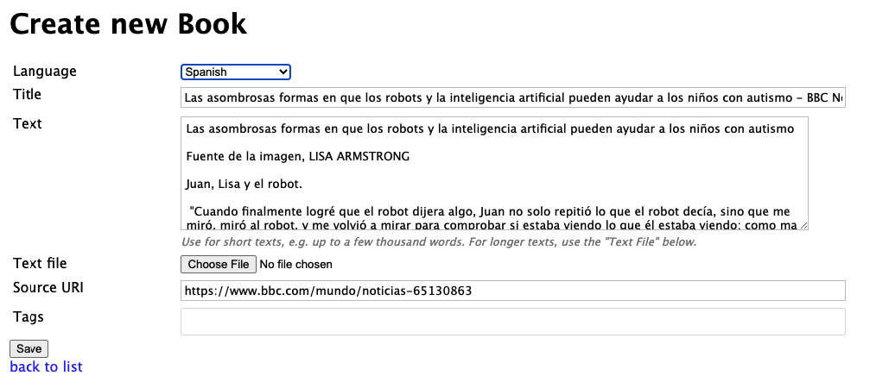

Creating books
From input or files
You can create books by importing files (.txt or .epub) or just entering text into a text box.
Importing web pages
From Books > Import web page, you can import a new text to read in your target language.
For example, a good source for Spanish news is bbc.com/mundo. If you find a story that's interesting:

Copy the URL https://www.bbc.com/mundo/noticias-65130863 and paste it in the text box:
Lute throws the whole page content into a new Book import screen:
You will want to edit the Text box content, because the import pulls in pretty much everything. It's not perfect, but it lets you quickly get new content loaded.
"Split by" and "Words per page"
These options tell Lute how to split up your book into separate pages.
Lute will keep adding groups of words (sentences or paragraphs) until the "words per page" threshold is exceeded.
For example, given the below text:
Para one sentence one. Para one sentence two. Para one sentence three.
Para two sentence one. Para two sentence two. Para two sentence three.
Different split settings will return different pages:
By Sentences, threshold 7 words per page:
Para one sentence one. Para one sentence two.
Para one sentence three.
Para two sentence one.
Para two sentence two. Para two sentence three.
By Paragraphs, threshold 7 words per page:
Para one sentence one. Para one sentence two. Para one sentence three.
Para two sentence one. Para two sentence two. Para two sentence three.
Which to use?
Once you get past the very beginning stages of reading, splitting by paragraphs makes the most sense, as standalone sentences usually don't contain much interesting content.
If your book contains very long paragraphs, Lute won't try to break them up further. This isn't easy to do reasonably and consistently, and shouldn't occur very often.